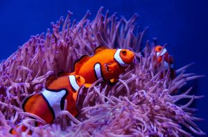

Panda

The Chinese name for Panda literally translate to "Bear Cat" and Panda primarily spends its life roaming and feeding in the bamboo forests in China.
- Scientific Name: Ailuropoda Melanoleuca
- Weight: 220 - 330 pounds
- Average Lifespan: 20 years
- Habitat: Temperate Forests High in the mountains of southwest China, where they subsists almost entirely on bamboo.
The Giant Panda, also known as the Panda Bear, is a Bear species endemic to China. It is characterised by its bold black-and-white coat and rotund body. The name "Giant Panda" is sometimes used to distinguish it from the red Panda, a neighboring Musteloid.
Clownfish
A Layer of mucus on the clownfish's skin makes it immune to the fish-eating anemone's lethal sting.
- Scientific Name: Amphiprioninae
- Average Length: 11 centimeters
- Average Lifespan: 7 years
- Habitat: Tropical coral reefs
Bright orange with three distinctive white bars, clown anemonefish are among the most recognizable of all reef-dwellers. They reach about 11 centimeters in length, and are named for the multicolored sea anemone in which they make their homes.
Dragon
Chinese Dragon can have many animal-like forms such as turtles and fish.
- Grouping: Mythical Creature
- Sub Grouping: Dragon
- County: China
- Folklore: Chinese Mythology
The dragon is also a symbol of power, strength, and good luck for people who are worthy of it